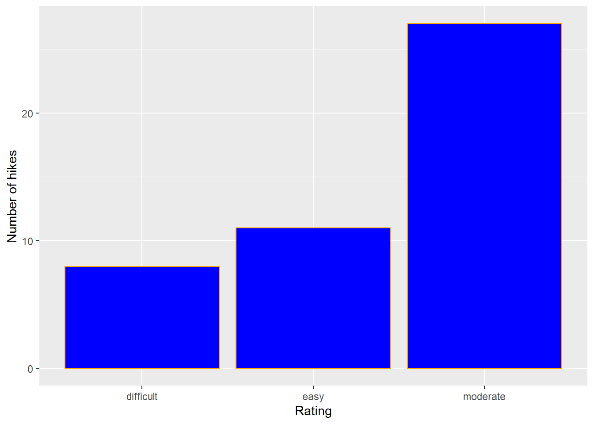
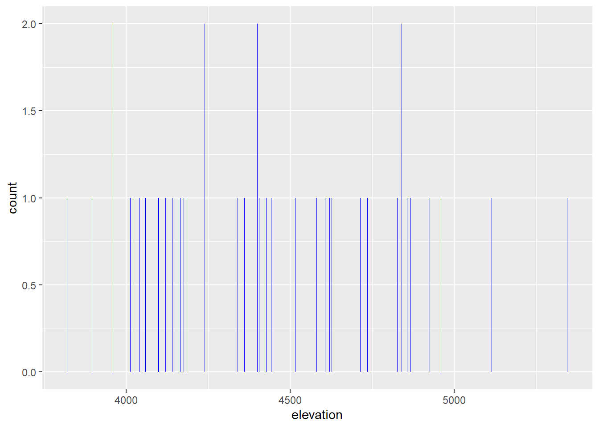
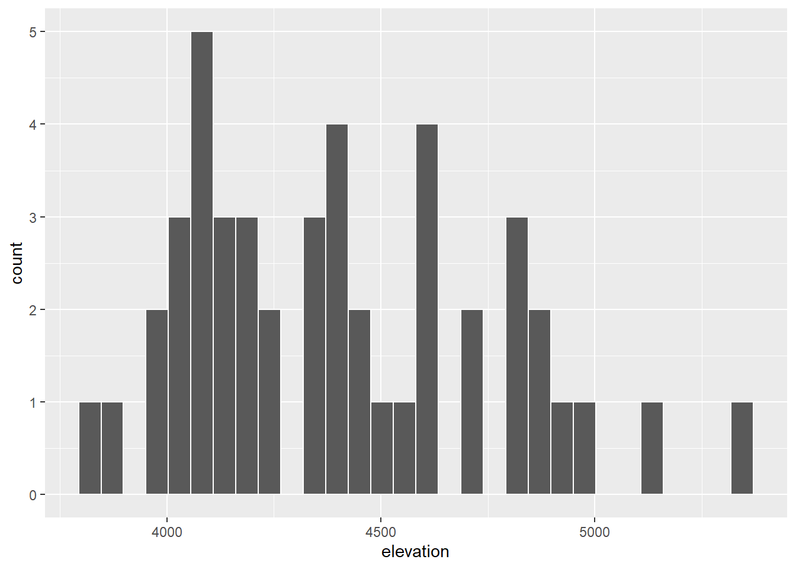
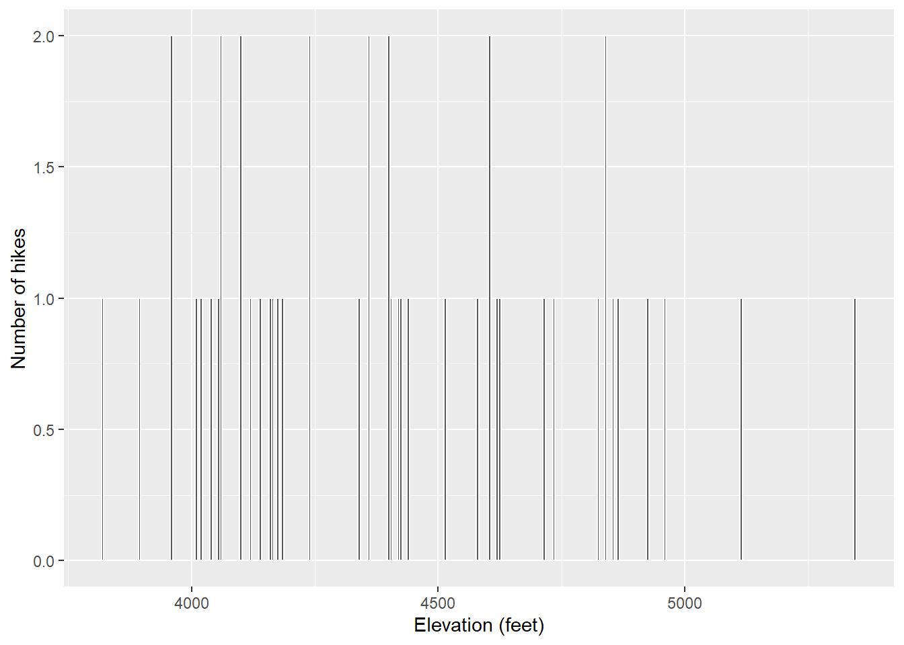
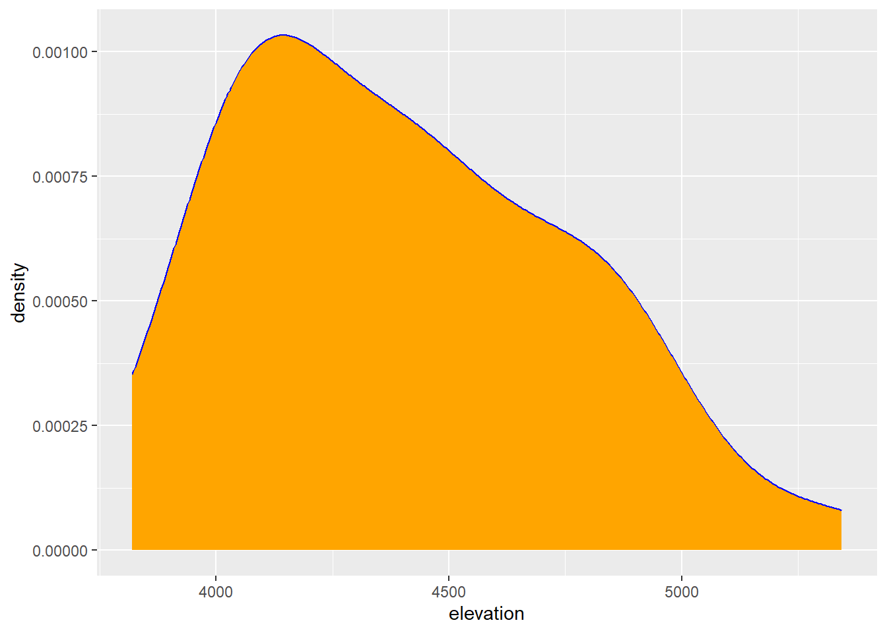

Univariate Viz — Exercises
Before starting, review the ICA Instructions ⭐ for details on pair programming and activity procedures.
Setup
Load the data first.
Exercise 1: Research Questions
Let’s dig into the hikes data, starting with the elevation and difficulty ratings of the hikes:
peak elevation difficulty ascent length time rating
1 Mt. Marcy 5344 5 3166 14.8 10.0 moderate
2 Algonquin Peak 5114 5 2936 9.6 9.0 moderate
3 Mt. Haystack 4960 7 3570 17.8 12.0 difficult
4 Mt. Skylight 4926 7 4265 17.9 15.0 difficult
5 Whiteface Mtn. 4867 4 2535 10.4 8.5 easy
6 Dix Mtn. 4857 5 2800 13.2 10.0 moderate- What features would we like a visualization of the categorical difficulty
ratingvariable to capture? - What about a visualization of the quantitative
elevationvariable?
Exercise 2: Load tidyverse
We’ll address the above questions using ggplot tools. Try running the following chunk and simply take note of the error message – this is one you’ll get a lot!
In order to use ggplot tools, we have to first load the tidyverse package in which they live. We’ve installed the package but we need to tell R when we want to use it. Run the chunk below to load the library. You’ll need to do this within any .qmd file that uses ggplot().
Exercise 3: Bar Chart of Ratings - Part 1
Consider some specific research questions about the difficulty rating of the hikes:
- How many hikes fall into each category?
- Are the hikes evenly distributed among these categories, or are some more common than others?
All of these questions can be answered with: (1) a bar chart; of (2) the categorical data recorded in the rating column. First, set up the plotting frame:

Think about:
What did this do? What do you observe?
What, in general, is the first argument of the
ggplot()function? figuring out what data you’re looking atWhat is the purpose of writing
x = rating? to set x to a variableWhat do you think
aesstands for?!? aesthetics?
Exercise 4: Bar Chart of Ratings - Part 2
Now let’s add a geometric layer to the frame / canvas, and start customizing the plot’s theme. To this end, try each chunk below, one by one. In each chunk, make a comment about how both the code and the corresponding plot both changed.
NOTE:
- Pay attention to the general code properties and structure, not memorization.
- Not all of these are “good” plots. We’re just exploring
ggplot.

Code

Code

Code


Exercise 5: Bar Chart Follow-up
Part a
Reflect on the ggplot() code.
- What’s the purpose of the
+? When do we use it?
It is like saying and or adding on more arguments
- We added the bars using
geom_bar()? Why “geom”?
geometry
- What does
labs()stand for?
labels
- What’s the difference between
colorandfill?
color is the outside and fill is the inside
Part b
In general, bar charts allow us to examine the following properties of a categorical variable:
- observed categories: What categories did we observe?
we looked at categories of difficulty
- variability between categories: Are observations evenly spread out among the categories, or are some categories more common than others?
some categories are more common than others
We must then translate this information into the context of our analysis, here hikes in the Adirondacks. Summarize below what you learned from the bar chart, in context.
Hikes are typically moderate in difficulty with few being on the extremes of difficulty either very or a little difficult.
Part c
Is there anything you don’t like about this barplot? For example: check out the x-axis again.
I don’t like that it is arranged from the rating with the least amount of mountains to the rating with most amount of mountains as opposed to flowing from least to most difficult.
Exercise 6: Sad Bar Chart
Let’s now consider some research questions related to the quantitative elevation variable:
- Among the hikes, what’s the range of elevation and how are the hikes distributed within this range (eg, evenly, in clumps, “normally”)?
- What’s a typical elevation?
- Are there any outliers, ie, hikes that have unusually high or low elevations?
Here:
- Construct a bar chart of the quantitative
elevationvariable. - Explain why this might not be an effective visualization for this and other quantitative variables. (What questions does / doesn’t it help answer?)
Code

Exercise 7: A Histogram of Elevation
Quantitative variables require different viz than categorical variables. Especially when there are many possible outcomes of the quantitative variable. It’s typically insufficient to simply count up the number of times we’ve observed a particular outcome as the bar graph did above. It gives us a sense of ranges and typical outcomes, but not a good sense of how the observations are distributed across this range. We’ll explore two methods for graphing quantitative variables: histograms and density plots.
Histograms are constructed by (1) dividing up the observed range of the variable into ‘bins’ of equal width; and (2) counting up the number of cases that fall into each bin. Check out the example below:

Part a
Let’s dig into some details.
- How many hikes have an elevation between 4500 and 4700 feet?
- How many total hikes have an elevation of at least 5100 feet?
Part b
Now the bigger picture. In general, histograms allow us to examine the following properties of a quantitative variable:
- typical outcome: Where’s the center of the data points? What’s typical?
- variability & range: How spread out are the outcomes? What are the max and min outcomes?
- shape: How are values distributed along the observed range? Is the distribution symmetric, right-skewed, left-skewed, bi-modal, or uniform (flat)?
- outliers: Are there any outliers, ie, outcomes that are unusually large/small?
We must then translate this information into the context of our analysis, here hikes in the Adirondacks. Addressing each of the features in the above list, summarize below what you learned from the histogram, in context.
Exercise 8: Building Histograms - Part 1
2-MINUTE CHALLENGE: Thinking of the bar chart code, try to intuit what line you can tack on to the below frame of elevation to add a histogram layer. Don’t forget a +. If it doesn’t come to you within 2 minutes, no problem – all will be revealed in the next exercise.
Exercise 9: Building Histograms - Part 2
Let’s build some histograms. Try each chunk below, one by one. In each chunk, make a comment about how both the code and the corresponding plot both changed.

Code

Code

Code

Code

Exercise 10: Histogram Follow-up
- What function added the histogram layer / geometry? geom_histogram()
- What’s the difference between
colorandfill? Color is the outline and fill is like the fill tool in ms paint - Why does adding
color = "white"improve the visualization? because it makes a clear border between the data bins from eachother and the background - What did
binwidthdo? it changes how big the bins are so like they go into chunks counting from that idk how to explain it but yk ik right - Why does the histogram become ineffective if the
binwidthis too big (eg, 1000 feet)? because everything falls on one side or the other - Why does the histogram become ineffective if the
binwidthis too small (eg, 5 feet)? there are too many and a difference of five feet is insignificant in this case.
Exercise 11: Density Plots
Density plots are essentially smooth versions of the histogram. Instead of sorting observations into discrete bins, the “density” of observations is calculated across the entire range of outcomes. The greater the number of observations, the greater the density! The density is then scaled so that the area under the density curve always equals 1 and the area under any fraction of the curve represents the fraction of cases that lie in that range.
Check out a density plot of elevation. Notice that the y-axis (density) has no contextual interpretation – it’s a relative measure. The higher the density, the more common are elevations in that range.

Questions
-
INTUITION CHECK: Before tweaking the code and thinking back to
geom_bar()andgeom_histogram(), how do you anticipate the following code will change the plot?-
geom_density(color = "blue")the color will be the line -
geom_density(fill = "orange")fill will fill the bottom of the graph
-
TRY IT! Test out those lines in the chunk below. Was your intuition correct?
Code

- Examine the density plot. How does it compare to the histogram? What does it tell you about the typical elevation, variability / range in elevations, and shape of the distribution of elevations within this range?
it is very similar to the histogram with a moderate number of bins and bin size. The graph show me that there are very few mountains with a high elevation and a lot with an elevation around 4000 to 4500.
Exercise 12: Density Plots vs Histograms
The histogram and density plot both allow us to visualize the behavior of a quantitative variable: typical outcome, variability / range, shape, and outliers. What are the pros/cons of each? What do you like/not like about each?
I like how intuitive the density plot is and that it flows smoothly. I like that a histogram lets me box my data into neater packages and groups based on value.
Exercise 13: Code = communication
We obviously won’t be done until we talk about communication. All code above has a similar general structure (where the details can change):
- Though not necessary to the code working, it’s common, good practice to indent or tab the lines of code after the first line (counterexample below). Why?
Code

- Though not necessary to the code working, it’s common, good practice to put a line break after each
+(counterexample below). Why? because it makes your code look clean and understandable to anybody reading it including yourself

Exercise 14: Practice
Part a
Practice your viz skills to learn about some of the variables in one of the following datasets:
Part b
Check out the RStudio Data Visualization cheat sheet to learn more features of ggplot.
When done, don’t forgot to click Render Book and check the resulting HTML files. If happy, jump to GitHub Desktop and commit the changes with the message Finish uni viz and push to GitHub. Wait few seconds, then visit your portfolio website and make sure the changes are there.